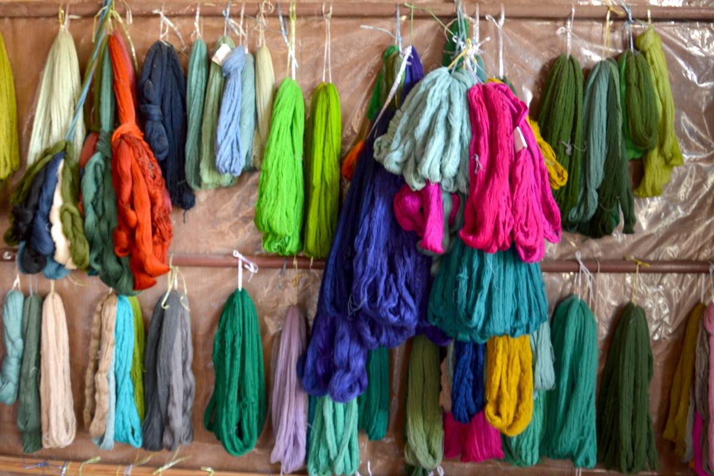
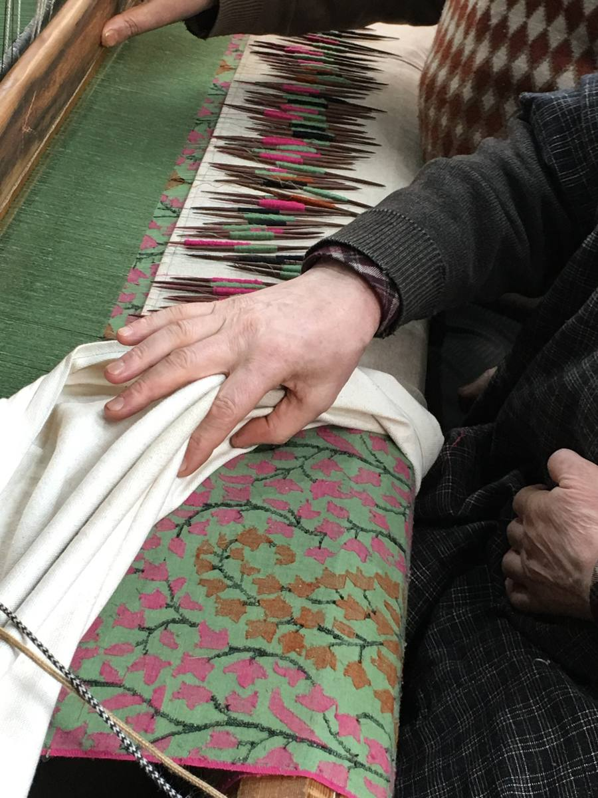
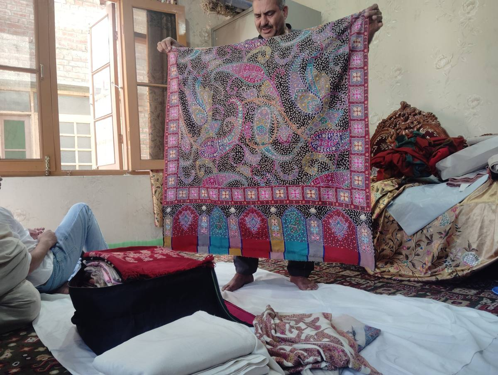

Handwerk
Materialien, Können und Traditionen mit ihrer ganzen Geschichte.
KASCHMIRISCHE HANDWERKSKUNST
Traditionelles Handwerk. Bedeutungsvolle Verbindungen. Eine Geschichte aus Kaschmir für die Welt.
CIVARA WORKSHOP
Wir arbeiten mit traditionellem Kunsthandwerk Kaschmirs und den Menschen, die es bewahren – von Pashmina und Sozani bis Kani, Jamawar und Wolle.
Materialien, Können und Traditionen mit ihrer ganzen Geschichte.
Eine persönliche Verbindung zu Kaschmir, Zanskar und Ladakh.
Handwerk, Gastfreundschaft und Bildung in einer gemeinsamen Vision.
UNSERE LEBENDIGEN TRADITIONEN
Entdecken Sie Materialien, Techniken und Menschen hinter unseren Textilien.
DIE HÄNDE HINTER DEM WERK
Sie sollen verstehen, was Sie kaufen: woher es stammt, wie es gefertigt wird und welche Menschen und Traditionen dahinterstehen.
Werkstatt entdecken →CIVARA PASHMINA WISSENSZENTRUM
Lernen Sie Materialien, Spinnmethoden und textile Traditionen kennen, bevor die Reise weitergeht.
Das Bildungszentrum entdecken ↗
01 / DAS GARN
Handgesponnenes Garn wird von einer Person mit einem traditionellen Spinnwerkzeug gezogen und gedreht. Es kann natürliche Unterschiede aufweisen und erfordert Geschick.
Maschinengesponnenes Garn wird mit Maschinen hergestellt und kann gleichmäßiger sein. Die Spinnmethode allein beweist nicht, dass die Faser echtes Pashmina ist.
Faserzusammensetzung, Spinnverfahren und Webart sind unterschiedliche Eigenschaften und sollten genau beschrieben werden.

02 / MUSTER DURCH WEBEN
Beim traditionellen Kani-Weben verwendet der Weber kleine Holzspulen, die Kanis heißen, um farbige Schussfäden einzutragen und das Muster beim Weben aufzubauen.
Jamawar bezeichnet eine Tradition reich gemusterter Textilien. Kani ist eine wichtige Technik für manche dieser komplexen Muster; die Begriffe sind nicht austauschbar.

03 / MUSTER DURCH STICKEREI
Sozani ist eine feine kaschmirische Handstickerei. Kunsthandwerker gestalten detaillierte Motive Stich für Stich mit Nadel und Faden.
Anders als Kani, bei dem das Muster beim Weben entsteht, wird bei Sozani das fertige Gewebe bestickt.
Entdecken Sie Lektionen zu Fasern, Vorbereitung, Spinnen, Weben, Handwerkern und geografischen Angaben.
Zum Pashmina-WissenszentrumDIE REISE
Die Geschichte von Civara endet nicht in der Werkstatt. Sie lebt in Menschen, Orten, Freundschaft und Gesten der Fürsorge weiter.
EINE GRÖSSERE VISION
AUS KASCHMIR, MIT SORGFALT
Bei Fragen zu Produkten, Großhandel, Zusammenarbeit, Gästehaus oder CHAI freuen wir uns auf Ihre Nachricht.
Civara kontaktieren